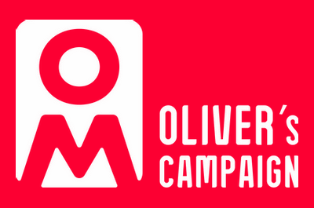

The Oliver McGowan Mandatory Training in Learning Disability and Autism was created after Oliver McGowan died due to medical staff not understanding his additional needs and how to make reasonable adjustments.
On 22nd October 2018, his parents Paula and Tom McGowan’s petition for all doctors and nurses to receive mandatory training in learning disability and autism awareness was discussed in parliament, resulting to the government announcing that the NHS and social care staff would all receive the Oliver McGowan Mandatory Training in Learning Disability and Autism. This training has Ask, Listen, Do at its heart.
A recent independent Learning Disability Mortality Review known as LeDeR unanimously concluded that Oliver's death was avoidable, and it shows how life changing it can be having training and awareness.
